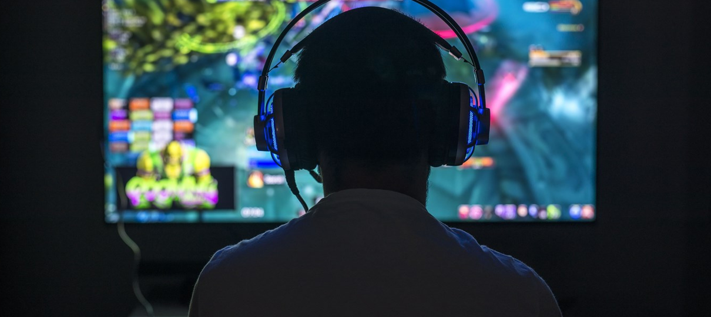

Inovação
IA Generativa: A Revolução nos NPCs e Mundos Infinitos
Como a inteligência artificial está criando diálogos dinâmicos que nunca se repetem e mundos que se moldam às escolhas reais do jogador.